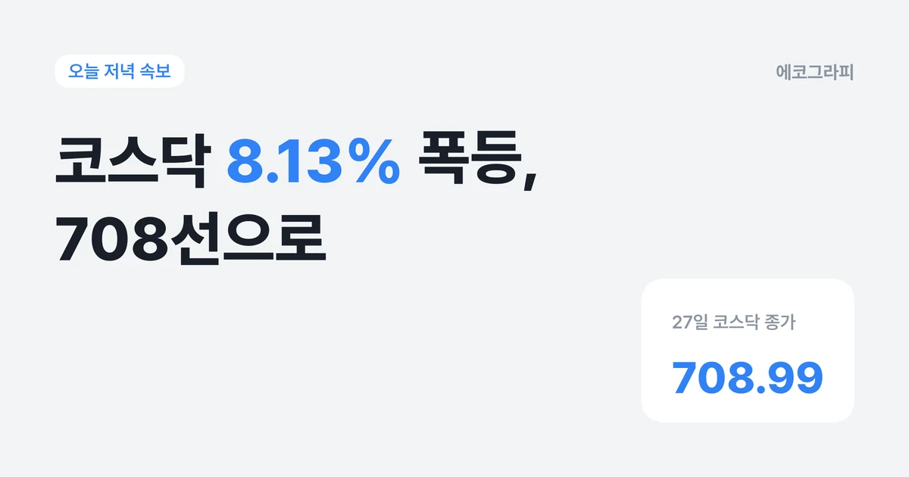
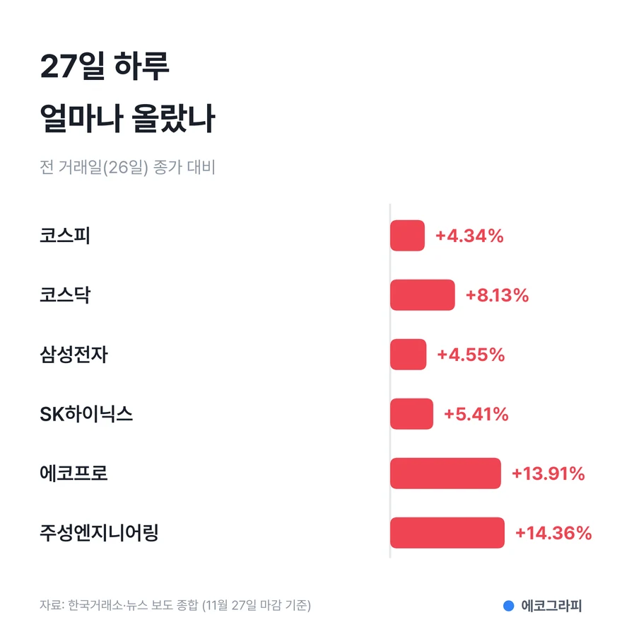
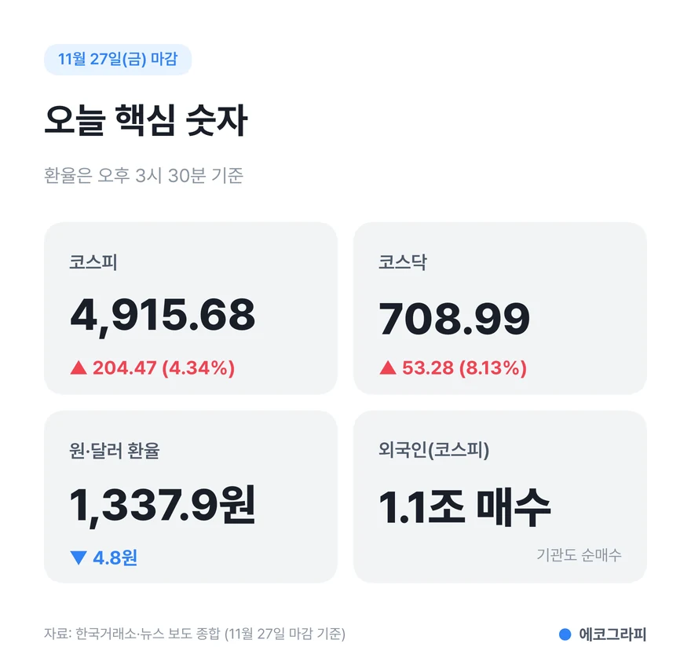
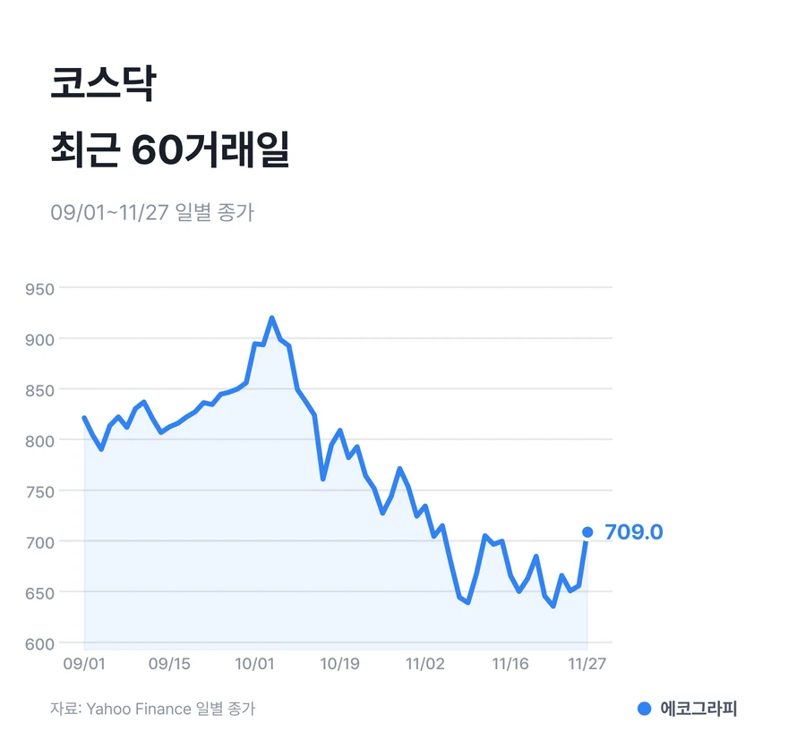

이번 주 우리 증시는 롤러코스터였어요. 24일 코스피가 6.32% 뛰었다가 25일 6.16% 빠졌고, 26일은 거의 제자리였어요. 그리고 오늘(27일) 다시 크게 올랐어요.
오늘 상승의 출발점은 해외였어요. 미국 증시는 추수감사절로 쉬었지만, 시간 외에 거래되는 나스닥100 선물이 2% 넘게 오르는 등 미국 주가지수 선물이 강했어요. 며칠 동안 시장을 짓눌렀던 AI 관련 걱정이 조금 누그러졌고, 너무 많이 빠졌다는 인식에 되사려는 주문도 들어왔어요. 정부가 증시안정펀드를 실제로 움직일 수 있다는 기대도 힘을 보탰어요.
코스닥은 1.34% 오른 664선에서 출발해 오름폭을 계속 키웠어요. 오전 10시 22분쯤 코스닥150 선물과 현물이 크게 오르면서 프로그램 매수 주문이 5분간 멈추는 매수 사이드카가 발동됐어요. 결국 53.28포인트(8.13%) 오른 708.99로 마감했어요. 코스피는 0.37% 오른 4,728선에서 시작해 204.47포인트(4.34%) 오른 4,915.68에 장을 마쳤어요.


코스닥 8%대 상승은 하루 기준으로 아주 드문 폭이에요. 다만 이번 달에만 20일 -5.71%처럼 큰 하락도 있었던 만큼, 그래프로 보면 많이 빠진 자리에서 되돌린 움직임이라는 점도 함께 봐야 해요.

오늘은 지난 25일과 반대 모습이었어요. 그날은 반도체 두 종목이 코스피를 끌어내렸고 코스닥은 덜 빠졌어요. 오늘은 코스닥이 코스피보다 두 배 가까이 올랐어요. 2차전지·로봇·반도체 장비처럼 그동안 많이 빠졌던 성장주에 돈이 몰렸다는 뜻이에요.
또 하나는 외국인과 기관이 양쪽 시장에서 함께 샀다는 점이에요. 최근 외국인은 하루 사고 하루 파는 일이 잦았어요. 다음 주에도 이 흐름이 이어지는지가 반등이 버틸지를 가늠하는 신호가 될 수 있어요.
한 줄 정리: "미국 선물 강세 + AI 걱정 완화 + 증시안정펀드 기대 → 외국인·기관 동반 매수 → 많이 빠졌던 코스닥 성장주 급반등"으로 이어진 하루예요.
오늘 해볼 것: 레버리지·인버스 ETF를 들고 있다면, 이번 주처럼 오르내림이 반복될 때 '지수는 제자리인데 내 상품은 손실'이 날 수 있다는 점을 확인해 두세요. 매일 수익률을 맞추는 구조라서 생기는 현상이에요.
다음 아침 시황 글에서 이어서 정리할게요. 이번 주 급락·급등은 25일 속보 글과 24일 속보 글에서 볼 수 있어요.
코스닥은 코스닥150 선물이 6% 넘게, 현물 지수가 3% 넘게 움직인 상태가 1분간 이어지면 프로그램 매수 주문을 5분간 멈춰요. 지나친 쏠림을 잠시 식히려는 장치예요. 일반 투자자의 주문은 그대로 돼요.
코스닥에는 2차전지·로봇·바이오·반도체 장비처럼 주가 변동이 큰 성장주가 많아요. 그동안 많이 빠졌던 이 종목들에 되사는 주문이 몰리면서 오름폭이 더 컸어요.
급등한 날에는 앞서 산 주식을 팔아 손실을 줄이거나 차익을 챙기려는 개인 주문이 많이 나와요. 오늘은 개인이 판 물량을 외국인과 기관이 받아 간 모양새예요.
하루 움직임만으로는 알 수 없어요. 이번 주에만 하루 5~6%씩 오르내린 날이 여러 번 있었어요. 이 글은 매수·매도를 권하지 않아요.
※ 2026년 11월 기준으로 정리한 글입니다. 세율·제도는 바뀔 수 있으니 거래 전 증권사·국세청 안내를 한 번 더 확인하세요. 특정 종목·상품의 매수·매도 권유가 아닙니다.